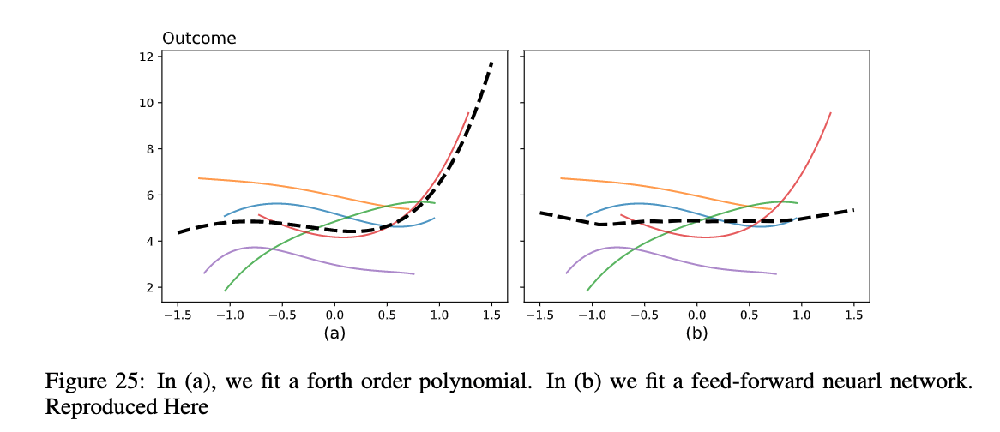

Regularizing the Forward Pass
It's not often that you come across a paper that might fundmentally changes the way many economists "do" causal inference. We believe, though, that this is one of those papers
The What
- Following Mostly Harmless Econometrics, the pillars of our economic analysis are nonparametric identification and parametric estimation. Nonparametric Identification $+$ Parametric Estimation $\implies$ Causal Flavor
- Introduce method that enhances the causal flavor:
- We apply our method to $\dots$
$$\begin{aligned} \text{ols} \ \textcolor{blue}{\text{data}} &= \textrm{linearModel} \ \textcolor{blue}{\text{data}} \\ \text{ols} \ \textcolor{blue}{\text{data}} \ \_&= \Big(\textrm{linearModel} \circ \$ \ \textrm{identityMap} \ \textcolor{blue}{\text{data}} \circ \$ \ \textrm{identityMap} \ \textcolor{blue}{\text{data}}\Big) \_ \\ \text{fwd\_pass} \ \textcolor{blue}{\text{data}} \ \textcolor{purple}{\text{params}}&= \Big(\textrm{linearModel} \circ \$ \ \textrm{featureMap} \ \textcolor{blue}{\text{data}} \circ \$ \ \textrm{clusterMap} \ \textcolor{blue}{\text{data}}\Big) \ \textcolor{purple}{\text{params}} \\ \text{fwd\_pass} \ \textcolor{blue}{\text{data}} \ \textcolor{purple}{\text{params}}&= \Big(\textrm{linearModel} \circ \$ \ \textrm{neuralODE} \ \textcolor{blue}{\text{data}} \circ \$ \ \textrm{MAML} \ \textcolor{blue}{\text{data}}\Big) \ \textcolor{purple}{\text{params}} \\ \text{reg\_fwd\_pass} \ \textcolor{blue}{\text{data}} \ \textcolor{purple}{\text{params}}&= \Big(\textrm{linearModel} >=> \$ \ \textrm{regNeuralODE} \ \textcolor{blue}{\text{data}} >=> \$ \ \textrm{regMAML} \ \textcolor{blue}{\text{data}}\Big) \ \textcolor{purple}{\text{params}} \\ \end{aligned}$$
$$\begin{aligned} &\text{regNeuralODE} :: \text{Data} \rightarrow \text{Params} \rightarrow \big(\textrm{Data}, \text{Float}\big) \\ &\text{regNeuralODE} \ \_ \ \textcolor{blue}{x} \ \_ \ \textcolor{purple}{\theta} := x + \int f(t, x(t), \theta)dt, \quad \int \Big\| \frac{\partial ^k}{dt^k}f(t, x(t), \theta) \Big\|dt \\ & \quad \quad \quad \quad \quad \quad \quad \quad \quad \quad \text{where} \quad x(0)=x \\ \\ &\text{regMAML} :: \text{Data} \rightarrow \text{Params} \rightarrow \big(\textrm{Params}, \text{Float}\big) \\ &\text{regMAML} \ \textcolor{blue}{\text{data}} \ \textcolor{purple}{\theta} := \Big(\text{Update}_m \circ \text{Update}_{m-1} \dots \circ \text{Update}_1 \Big) \ \textcolor{purple}{\theta}, \quad \mathcal{L}_c(\textcolor{blue}{\text{data}}, \textcolor{purple}{\theta}) \\ & \quad \quad \quad \quad \quad \quad \quad \quad \quad \quad \text{where} \quad \text{Update}_t \ \theta = \theta - \alpha_t \nabla \mathcal{L}_c(\textcolor{blue}{\text{data}}, \textcolor{purple}{\theta}) \end{aligned}$$
The Why
Application
Standard Econometrics
- Consider and abstract/simplified version of your estimator
- Show that it has nice asymptotic properties under a class of well-behaved data generator processes
- Hope that your estimator performs well on the given sample at hand
Learning From Data
- What you learn from your data depends on what you believe apriori
- What do you believe about the data generating prcoess and your algorithm
- What you believe about the treatment assignment mechanism, attrition, spillover
Overview
The Aim of this Paper
Understand the effect of police budgets on opioid-related overdoeses
Challenge
- Clustered Data
- Lacking Nonparametric Idenitifcation
Preview of Results
$$\theta \in [\textrm{Maybe}_{-}, \textrm{Maybe}_{+}]$$Contribution
Background
- $Y_i$ - Percentange Change in Opioid Deaths
- $Z_i$ - July 1st Fiscal Year
- $\xi _i$ - Covid Budget Shock
- $B_i$ - Budget amended before late May 2020
Best Case Scenario
$$\begin{aligned} \mathbb{E}[Y|Z=1] - \mathbb{E}[Y|Z=0] &= \int Y(1) - Y(0) d\mu \\ &= \int Y(\pi(1)) - Y(\underbrace{\pi(0)}_{=0})d\mu \\ &= \textrm{Avg Policy Effect}\end{aligned}$$Regularizing the Forward Pass
$$\mathcal{L}(\mathcal{D}_{\textrm{ata}},\mathcal{M}_{\textrm{odel}})= \hat{E}(\mathcal{D}_{\textrm{ata}},\mathcal{M}_{\textrm{odel}}) + \mathcal{R}(\mathcal{M}_{\textrm{odel}}) $$
$$\mathcal{L}(\mathcal{D}_{\textrm{ata}},\mathcal{M}_{\textrm{odel}})= \hat{E}(\mathcal{D}_{\textrm{ata}},\mathcal{M}_{\textrm{odel}}) + \mathcal{R}(\mathcal{D}_{\textrm{ata}}, \mathcal{M}_{\textrm{odel}}) $$
Generalizing Across Clusters
Challenge: The Tragic Triad
- Observe only a subset of the clusters
- Distribution of covariates can differ across clusters
- Distribution of outcomes conditional on covariates may differ across clusters
- High Level Idea: Gradient Correction that Favors Early Stopping at the cluster level
- Note: Bi-level gradient descent with an inner-loop: (approximately) Continuous MAML $+$ an integral loss function as the regularizer
Outer Training Loops

Bootstrapped

Larger Model?
Kernel Interpretation
Partially Linear Model
- Penalized weight methods prefer (A) sparse solutions in the feature space, or (B) small parameters in the weight space for the feature map
Contour plot taken from d2l